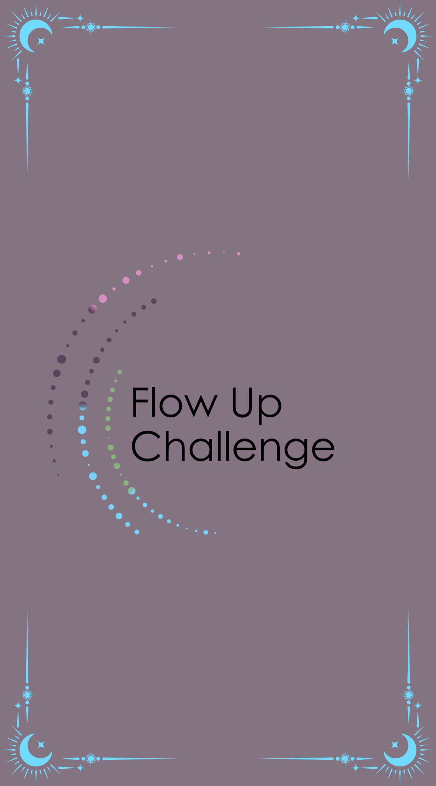

The Empress is the symbol of abundance and fertility in the Tarot Deck. The Empress brings the beauty of nature in all its forms and encourages us to allow nature to ground us. When The Empress is reversed, we are called to recognize the struggles of growth and our dependency on others.
Challenge: You drew the upright Empress. This month, abundance is key, you cannot overdo it. Go big and give your audience more of everything.